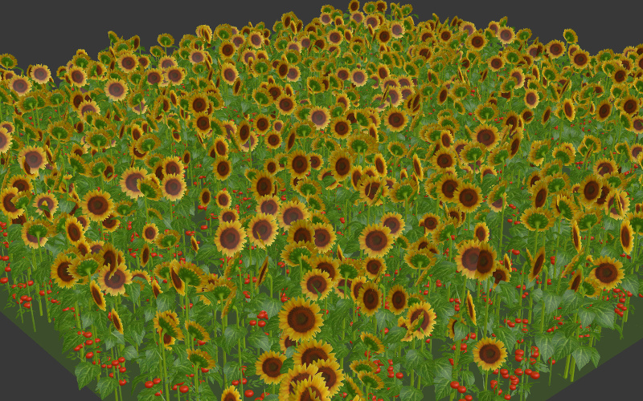
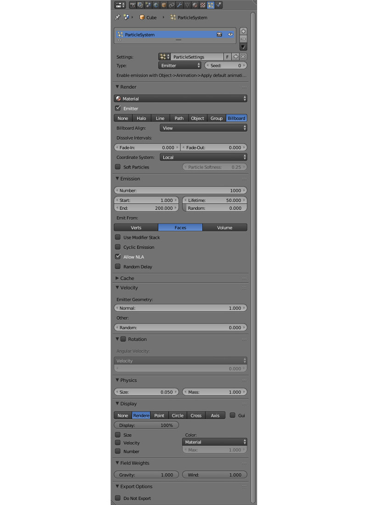
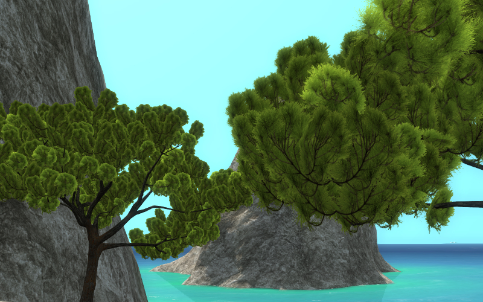
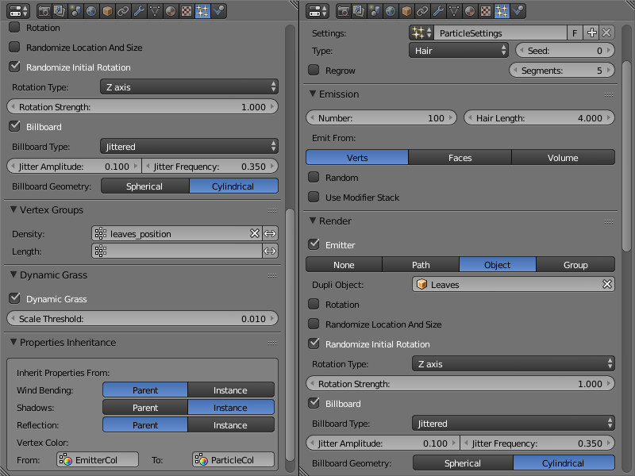

Система частиц. Инстансинг¶
Содержание
Система частиц может использоваться для создания множественных копий объектов (инстансинга). Кроме сокращения времени на создание сцены, инстансинг позволяет сэкономить на времени загрузки и сократить потребление памяти сценой в сравнении с использованием отдельных объектов.
{kind=link}
Использование системы частиц для инстансинга имеет ограничения:
Невозможно осуществлять движение и анимацию объектов внутри системы частиц.
Не допускается создавать иерархические сущности среди объектов внутри системы частиц за исключением дуплицирования групп.
Не допускается инстансинг отличных от объектов-мешей сущностей.
Настройки системы частиц¶
{kind=link}
Активация¶
На эмиттере создать систему частиц типа
Hair.В панели
Renderвыбрать тип отображенияObject(илиGroup).В поле
Dupli Object(илиDupli Group) выбрать объект (или группу объектов) для инстансинга. Поддерживаются как локальные, так и подключенные по ссылке объекты (или группы).
Рекомендуемые дополнительные настройки
Для корректного отображения размера установить значение 1.0 для параметров
Emission > Hair LengthиRender > Size.
{kind=link}
Настройки отображения¶
Render > Use Count
Опция доступна для групп объектов-частиц. При включении появляется интерфейс установки относительного количества входящих в группу объектов. Движок не воспроизводит точное местонахождение объектов заданных типов.
Render > Randomize Location and Size
Опция устанавливает случайный характер расположения и размеров объектов. Если опция включена, движок генерирует случайные координаты и размер (в пределах ±25%) объектов-частиц. Если опция выключена, производится экспорт и использование текущих координат и размеров объектов-частиц.
Render > Randomize Initial Rotation
Опция устанавливает случайный характер вращения объектов относительно оси определяемой параметром
Rotation Type. Если опция включена, движок генерирует случайные углы вращения объектов-частиц. Если опция выключена, применяется ориентация согласно панелиRotation.
Render > Rotation Type
Ось случайного поворота объекта (опция доступна при включении
Render > Randomize Initial Rotation). Возможны два варианта:
Z axis- случайный поворот будет осуществлен относительно вертикальной оси Z
Random axis- случайный поворот будет осуществлен относительно случайной осиЗначение по умолчанию
Z axis.
Render > Rotation Strength
Коэффициент, определяющий диапазон случайных углов поворота, отсчитываемых от направления на камеру (опция доступна при включении
Render > Randomize Initial Rotation). Например:
Rotation Strength = 1- углы будут лежать в пределах \([-\pi, \pi]\)
Rotation Strength = 0.5- углы будут лежать в пределах \([-0.5 \cdot \pi, 0.5 \cdot \pi]\)
Rotation Strength = 0.1- углы будут лежать в пределах \([-0.1 \cdot \pi, 0.1 \cdot \pi]\)Значение по умолчанию 1.
Render > Billboard
Включение билбординга для частиц. По умолчанию выключено.
Render > Billboard Type
Тип билбординга (опция доступна при включении
Render > Billboard). Доступны три типа:
Basic- простой односторонний билбординг: частицы всегда будут повернуты лицевой стороной
Random- случайный двусторонний билбординг: частицы чаще всего будут повернуты лицевой, либо обратной стороной, реже - боком; присутствует небольшой случайный поворот; модель создана специально для инстансинга травы
Jittered- односторонний билбординг с колебанием частиц в плоскости, обращенной к наблюдателю; модель создана специально для инстансинга листвы деревьевЗначение по умолчанию
Basic.
Render > Jitter Amplitude
Коэффициент амплитуды колебаний частиц (опция доступна при выборе типа
JitteredвRender > Billboard Type). При увеличении параметра амплитуда растет. Значение по умолчанию 0.
Render > Jitter Frequency
Частота колебаний частиц, Гц (опция доступна при выборе типа
JitteredвRender > Billboard Type). Значение по умолчанию 0.
Render > Billboard Geometry
Тип вращения билбордов (опция доступна при включении
Render > Billboard). Доступны два типа:
Spherical- сферический билбординг, полная ориентация частиц по отношению к наблюдателю, вращение ничем не ограничено;
Cylindrical- цилиндрический билбординг, вращение частиц только относительно оси ZЗначение по умолчанию
Spherical.
Настройки динамической травы¶
Dynamic Grass
Опция включает режим динамического рендеринга травяного покрова. По умолчанию отключено.
Dynamic Grass > Scale Threshold
Минимальный размер частиц динамической травы. Частицы меньшего размера не отображаются. Опция доступна при включении
Dynamic Grass.
Настройки наследования¶
Properties Inheritance > Wind Bending
Наследование частицами настроек
Wind Bending:
Parent- наследование с эмиттера
Instance- наследование с объекта самой частицыЗначение по умолчанию
Parent.
Properties Inheritance > Shadows
Наследование частицами настроек теней:
Parent- наследование с эмиттера
Instance- наследование с объекта самой частицыЗначение по умолчанию
Parent.
Properties Inheritance > Reflection
Наследование частицами настроек отражений:
Parent- наследование с эмиттера
Instance- наследование с объекта самой частицыЗначение по умолчанию
Parent.
Properties Inheritance > Vertex Color
Наследование частицами вертексного цвета с эмиттера. Содержит два поля:
From- имя существующего у эмиттера вертексного цвета
To- имя существующего у частицы вертексного цветаПо умолчанию наследования не происходит.
Травяной покров¶
Инстансинг объектов может использоваться для визуализации травяного покрова на обширных площадях. При этом происходит отрисовка травы вблизи камеры по мере ее движения по ландшафту.

Активация
На отдельном объекте-плоскости создать систему частиц для инстансинга объектов. Включить опцию
Dynamic Grass.На предполагаемом материале ландшафта включить опцию
Terrain Dynamic Grass.
Настройка
Рекомендуется создать несколько плоскостей (например, 3) с размерами, соответствующими желаемому размеру каскада травяного покрова (например, 100, 150 и 250 м).
На материале ландшафта при включении опции Terrain Dynamic Grass становятся активными текстовые поля:
- Dynamic Grass Size (R)
Название слоя вертексного цвета меша ландшафта, предназначенного для модифицирования размера травяного покрова. Размер (“высота”) травяного покрова задается оттенками серого - чем светлее, тем больше.
- Dynamic Grass Color (RGB)
Название слоя вертексного цвета меша ландшафта, предназначенного для подкраски травяного покрова. Вертексный цвет умножается на цвет материала травы. Параметр
Influence > Blendдиффузной текстуры материала травы должен иметь значениеMultiply.
Слои вертексного цвета с такими названиями должны существовать в меше ландшафта.
Рекомендуется также отключить отображение эмиттера (опция Render > Emitter).
{kind=link}
Листва деревьев¶
Инстансинг хорошо подходит для отображения листвы на деревьях, и позволяет добиться более высокого уровня детализации.
{kind=link}
Активация
Осуществляется как описано выше в разделе Настройки системы частиц -> Активация. Здесь соответственно эмиттером будет выступать дерево, а частицами - ветки, листья и т.д.
Для эмиттера дополнительно можно сделать следующее:
создать вертексную группу, включающую вершины, на которых будут располагаться частицы
создать слой вертексного цвета для настройки Wind Bending дерева и листвы
создать слой вертексного цвета для наследования его частицами (можно использовать, например, для подкраски частиц)
Настройка
Настройки случайного поворота
Если включена опция Render > Randomize Initial Rotation, то рекомендуется выставить вертикальную ось случайного поворота - Z axis (опция Render > Rotation Type). Опция Render > Rotation Strength - на свое усмотрение.
Настройки билбординга
Рекомендуется включить билбординг, выставить тип Jittered (опция Render > Billboard Type) и сделать его сферическим - Spherical (опция Render > Billboard Geometry). Настройки Render > Jitter Amplitude и Render > Jitter Frequency - на свое усмотрение.
Настройки расположения частиц
Рекомендуется выставить опцию Emission > Emit From в значение Verts, а в Vertex Group > Density выбрать вертексную группу эмиттера с вершинами для расположения частиц. Также нужно отключить опцию Render > Randomize Location and Size.
Настройки эффекта ветра
Рекомендуется включить наследование настроек из эмиттера - выставить Parent в опции Properties Inheritance > Wind Bending. Затем у эмиттера в панели Object выбрать опцию Wind Bending и настроить параметры бендинга. Для дерева достаточно указать параметры Wind Bending > Main Bending > Angle и Wind Bending > Main Bending > Frequency, а также вертексный цвет для бендинга - Wind Bending > Main Bending > Main Stiffness.
Настройки наследования вертексного цвета
Для наследования частицами вертексного цвета эмиттера нужно указать имя цвета эмиттера и имя цвета частицы соответственно в полях Properties Inheritance > Vertex Color > From и Properties Inheritance > Vertex Color > To. При наследовании цвет ближайшей к частице вершины эмиттера из From будет скопирован и размножен в цвет To частицы.
Полученный таким образом вертексный цвет с именем Properties Inheritance > Vertex Color > To можно будет использовать в нодовом материале частицы для ее подкрашивания либо каких-то других эффектов.
Настройки размеров частиц в зависимости от весовых коэффициентов вертексной группы
Для создания зависимости между размером частиц и весовым коэффициентом вертекса из вертексной группы укажите на панели Vertex groups > Length имя вертексной группы.
Для управления эффектом необходимо задать весовые коэффициенты в выбранной вертексной группе.
{kind=link}